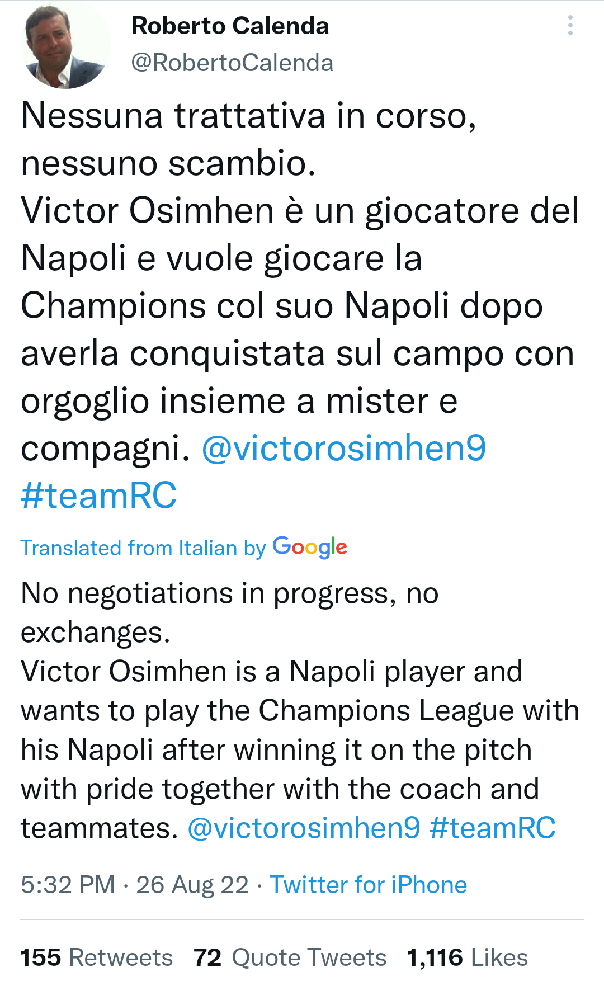

Victor Osimhen’s super agent Roberto Calenda, has reacted to reports of a
swap deal between his client and
Manchester United's Cristiano Ronaldo. Reports emerged in Italy on Friday,
August 26 that Cristiano Ronaldo’s agent Jorge Mendes is working on a
deal to bring Osimhen to Manchester United and Ronaldo to Napoli on
loan.
According to the report, Napoli demanded €120m before a deal could be
struck with the Nigerian.
However, Calenda has now stated on Twitter that there are no ongoing
negotiations with Manchester United regarding his client .
“No ongoing negotiations, no swap deals. Osimhen is a Napoli player and
wants to play in the Champions
League with his Napoli side after conquering it on the pitch with pride
along with his teammates and the
coach.” Calenda wrote on his Twitter handle Friday evening, August 26.

The 23-year-old Edo native joined Napoli from Ligue 1 club, Lille three
years ago and has scored scored 30
goals in 64 appearances for the Partenopei.